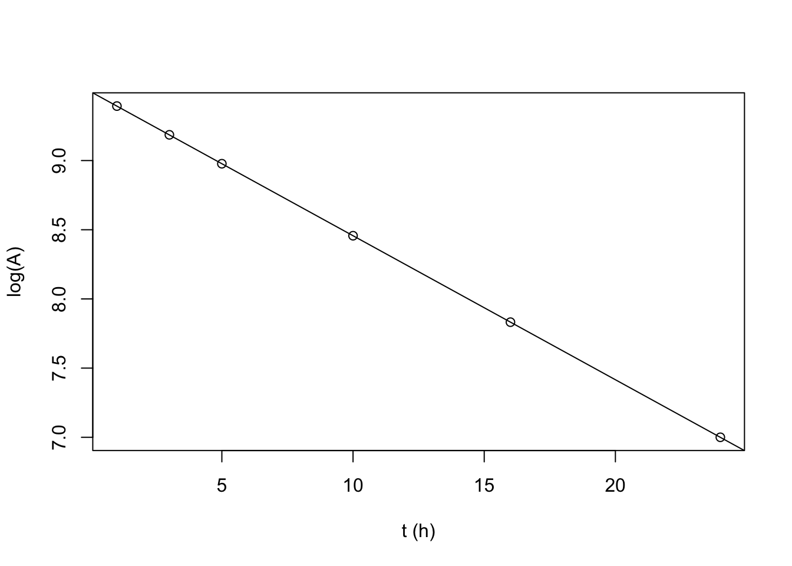
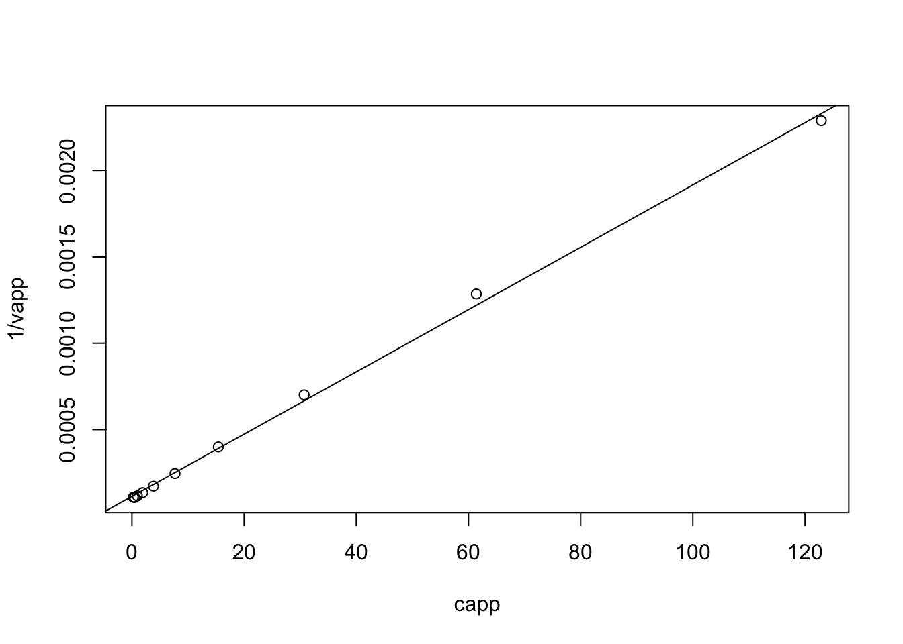

2019
Specific radioactivity of ATP and glucose.
1 Aim
- Given a sample containing (fake) radioactive 14C glucose and 3H ATP:
- determine concentration of glucose and ATP.
- Given that both concentrations lie between 1mM and 10mM.
- Given that \(\epsilon^{260}_\text{ATP}=1.57\times10^4 \text{ mol}^{-1}\text{ dm}^3\text{ dm}^{-1}\)
- determine radioactivity of the sample (virtual practical)
- and hence determine the specific radioactivity of ATP and glucose
- determine concentration of glucose and ATP.
- 23 samples have glucose and ATP concentrations falling into two distinct classes. They are independently measured by 23 pairs of students. Determine these concentrations using the class results and assess precision and accuracy.
2 Reagents and Apparatus Provided
- 15mL sample solution
- 0.1 M Na3PO4 buffer at pH 7.0
- 1mM ABTS
- Glucose Oxidase (100 U/mL) and peroxidase (20 U/mL)
- Solid glucose
- Spectrophotometer
3 Method
3.1 ATP concentration
3.1.1 Dilution
3.1.1.1 Determining scale of dilution
Given that 1mM < ATP < 10mM and that \(\epsilon^{260}_\text{ATP}=1.57\times10^4 \text{ mol}^{-1}\text{ dm}^3\text{ dm}^{-1}\), according to \(A^{260}=\epsilon^{260}cl\):
if no dilution:
\[ \begin{aligned} 1.57\times10^4\times0.001<&A^{260}<1.57\times10^4\times0.01 \\ 15.7<&A^{260}_\text{raw}<157 \\ \end{aligned} \]
clearly, a 1:100 dilution would be very likely to produce a sensible \(A^{260}\):
\[0.157<A^{260}_\text{1:100 dilution}<1.57\]
3.1.1.2 Making dilution
5mL of 1:100 diluton is made serially by first fixing 500 \(\mu\text{L}\) sample with 4.5mL buffer then mixing 500 \(\mu\text{L}\) of the resulting 1:10 dilution with another 4.5mL buffer.
A preliminary test gives \(A^{260}_\text{1:100 dilution}=0.503\), which is within the range where the spectrophotometer is accurate, so we made 4 more 1:100 dilutions using the method described above.
3.1.2 Results
See section 4.1
3.2 Glucose concentration
3.2.1 Mechanism
Glucose itself does not have convenient absorption. Thus, glucose oxidase, ABTS and peroxidase is added to make a green solution (glucose is first oxidised by oxidase to produce gluconic acid and H2O2; peroxidase then catalyses the reaction between H2O2 and ABTS to produce a green dye).
3.2.2 Determine the volume of enzyme
We want the reaction to ‘virtually’ complete (i.e. > 99% conversion of substrate) in 10 min.
For an enzyme reaction:
\[-\dfrac{ds}{dt}=v-\dfrac{V_\text{max}s}{K_m+S}\]
As the reaction approaches completion, \(s<<K_m\):
\[-\dfrac{ds}{dt}=\dfrac{V_\text{max}s}{K_m}\]
Integrating to determine the total time for a given change in \(s\):
\[ \begin{aligned} -\int_{s_0}^{s_1}{\dfrac{ds}{s}}&=\dfrac{V_\text{max}}{K_m}\int_0^t dt \\ \ln\dfrac{s_0}{s_1}&=\dfrac{V_\text{max}t}{K_m} \end{aligned} \]
For a decrease in \(s\) from 100% to 1% in 10 min:
\[ \begin{aligned} \ln\dfrac{100}{1}&=\dfrac{V_\text{max}\times 10}{K_m} \\ V_\text{max}&=0.4605K_m \text{ (mol L}^{-1}\text{min}^{-1}\text{)} \end{aligned} \]
Our assay volume will be 4.0mL, so the amound of enzyme, in U (\(\mu\text{mol min}^{-1}\)), will be
\[\text{amount of enzyme in U}=0.4605\times K_m \times 4.0 \times 10^{-3}\times10^6=1842K_m\]
where \(K_m\) has unit M.
For GOD, \(K_m=1\text{ mM}\), and the provided enzyme concentration is 100U/mL:
\[ \begin{aligned} K_m&=1\text{ mM} \\ \text{minimum amount of enzyme}&=1842 \times 1 \times 10^{-3}=1.84 \text{ U} \\ \text{minimum volume of enzyme}&=1.84 \div 100=0.0184 \text{ mL} \end{aligned} \]
For POD, \(K_m=100\text{ }\mu\text{M}\), and the provided enzyme concentration is 20U/mL:
\[ \begin{aligned} K_m&=100\text{ }\mu\text{M} \\ \text{minimum amount of enzyme}&=1842 \times 100 \times 10^{-6}=0.184 \text{ U} \\ \text{minimum volume of enzyme}&=0.184 \div 20=0.0092 \text{ mL} \end{aligned} \]
We decided to use an excess amount of enzyme (i.e. 0.1mL for both). This guarantees that the reactions will complete within 10 min, and makes it easier to make up the 4mL total volume for assay (see section 3.2.4.2).
3.2.3 Determining \(\lambda_\text{max}\)
Measuring absorbance near \(\lambda_\text{max}\) reduces error. An 100nmol-glucose-containing (i.e. with 1mL 0.1mM glucose solution, see section 3.2.4.2) assay result is used. The absorbance in the range 350nm to 450nm is measured, and \(\lambda_\text{max} = 418\text{ nm}\). We then used this wavelength for all glucose assays.
3.2.4 Calibration
Calibrate \(A^{418}\) with known glucose concentrations, then we can map \(A^{418}_\text{sample}\) to the calibration curve to determine sample glucose concentration.
3.2.4.1 Dilution
- 0.18 g glucose is dissolved in 100mL buffer, which gives 10mM glucose solution (which is handy, as the maximum possible concentration of glucose in the sample is also 10mM)
- 100mL 0.1mM glucose solution is made by mixing 1mL 10mM glucose solution with 99mL buffer (1:100 dilution).
3.2.4.2 Assay
Assays are made on 4mL mixtures with varying amount of glucose, according to the following table:
| ABTS | Buffer | 0.1mM glucose | H2O | GOD | POD | nmol glucose |
|---|---|---|---|---|---|---|
| 2mL | 0.8mL | 1.0mL | 0mL | 0.1mL | 0.1mL | 100 |
| 2mL | 0.8mL | 0.8mL | 0.2mL | 0.1mL | 0.1mL | 80 |
| 2mL | 0.8mL | 0.6mL | 0.4mL | 0.1mL | 0.1mL | 60 |
| 2mL | 0.8mL | 0.4mL | 0.6mL | 0.1mL | 0.1mL | 40 |
| 2mL | 0.8mL | 0.2mL | 0.8mL | 0.1mL | 0.1mL | 20 |
| 2mL | 0.8mL | 0mL | 1.0mL | 0.1mL | 0.1mL | 0 |
Then the mixture is incubated at 37\(^\circ\text{C}\) for 10 minutes (in a theromostatically-controlled water bath), then \(A^{418}\) is measured.
Every row is repeated 3 times.
3.2.5 Sample Assay
The sample is diluted 1:100 by mixing 1mL sample with 99mL buffer.
4mL assays are made on 1mL 1:100 dilution 3 times, according to the following table (identical to the assays used for calibration except that an unknown concentration is used this time)
| ABTS | Buffer | diluted sample | GOD | POD | |
|---|---|---|---|---|---|
| 2mL | 0.8mL | 1.0mL | 0.1mL | 0.1mL |
3.2.6 Results
See section 4.2
3.3 Radioactivity Counting (Virtual)
0.2mL sample is mixed with 1.8mL scintillation fluid in a polyvial and placed into the scintillation counter. The count time is 2min. The results are shown in section 5.5.
4 Our Results
4.1 ATP
(Methods in section 3.1)
A <- c(0.503, 0.513, 0.508, 0.525, 0.516)
c_ATP <- A/1.57e4*100*1000
kable(tibble(`$A^{260}_\\text{1:100 dilution}$`=A, `[ATP] of raw sample (mM)`=c_ATP))| \(A^{260}_\text{1:100 dilution}\) | ATP of raw sample (mM) |
|---|---|
| 0.503 | 3.203822 |
| 0.513 | 3.267516 |
| 0.508 | 3.235669 |
| 0.525 | 3.343949 |
| 0.516 | 3.286624 |
Statistical summary of ATP in sample:
x <- c_ATP; n <- length(x); df <- n - 1; t = qt(0.975, df)
c(mean=mean(x), sd=sd(x), SE=sd(x)/sqrt(n), t = t, `t*SE` = t*sd(x)/sqrt(n))## mean sd SE t t*SE
## 3.26751592 0.05309978 0.02374695 2.77644511 0.06593209Which gives 95% confidence interval: \(\text{[ATP]}=3.268\pm0.054\) mM
4.1.1 Distinguishing between 4.0mM and 4.5mM ATP
The percentage error (coefficient of variance) of this experiment is:
\[c_v=\dfrac{s_x}{\bar{x}}=\dfrac{0.054}{3.268}=0.0165\]
for \(\bar{x}\) = 4.0 and 4.5, \(s_x=c_v\bar{x}\) = 0.0661 and 0.0744, respectively.
To distinguish between the two, two sample t test is used. If \(n\) measurements are made on each concentration, then
\[t=\dfrac{\bar{x_1}-\bar{x_2}}{\sqrt{\dfrac{s_1^2}{n}+\dfrac{s_2^2}{n}}}=\dfrac{4.5-4.0}{\sqrt{\dfrac{0.0661^2+0.0744^2}{n}}}=\sqrt{25.26n}\]
then we can get a list of \(p\) values for each \(n\):
n <- 2:8
df <- n - 1
t <- sqrt(25.26 * n)
p <- (1 - pt(t, df)) * 2
names(p) <- paste('n =', n)
round(p, 5)## n = 2 n = 3 n = 4 n = 5 n = 6 n = 7 n = 8
## 0.08898 0.01294 0.00210 0.00036 0.00006 0.00001 0.00000as n increases, \(p\) decreases. When n = 3, \(p\) is already less than 0.05.
4.2 Glucose
(Methods in section 3.2)
4.2.1 Calibration
The results are shown below:
A1 <- c(0.952, 0.815, 0.709, 0.496, 0.272, 0)
A2 <- c(1.223, 0.969, 0.704, 0.415, 0.222, 0)
A3 <- c(1.194, 0.919, 0.682, 0.452, 0.236, 0)
A <- c(A1, A2, A3)
glucose = c(100, 80, 60, 40, 20, 0)
kable(tibble(`nmol glucose in 4mL assay` = glucose, `$A^{418}_1$` = A1,
`$A^{418}_2$` = A2, `$A^{418}_3$` = A3))| nmol glucose in 4mL assay | \(A^{418}_1\) | \(A^{418}_2\) | \(A^{418}_3\) |
|---|---|---|---|
| 100 | 0.952 | 1.223 | 1.194 |
| 80 | 0.815 | 0.969 | 0.919 |
| 60 | 0.709 | 0.704 | 0.682 |
| 40 | 0.496 | 0.415 | 0.452 |
| 20 | 0.272 | 0.222 | 0.236 |
| 0 | 0.000 | 0.000 | 0.000 |
To fit a straight line, linear regression is used. The coefficients are shown below:
summary(lm(A ~ 0 + rep(glucose, 3)))##
## Call:
## lm(formula = A ~ 0 + rep(glucose, 3))
##
## Residuals:
## Min 1Q Median 3Q Max
## -0.181273 -0.000982 0.005691 0.039277 0.089727
##
## Coefficients:
## Estimate Std. Error t value Pr(>|t|)
## rep(glucose, 3) 0.0113327 0.0002387 47.48 <2e-16 ***
## ---
## Signif. codes: 0 '***' 0.001 '**' 0.01 '*' 0.05 '.' 0.1 ' ' 1
##
## Residual standard error: 0.06132 on 17 degrees of freedom
## Multiple R-squared: 0.9925, Adjusted R-squared: 0.9921
## F-statistic: 2254 on 1 and 17 DF, p-value: < 2.2e-16which shows there is a linear relationship \(A^{418}=0.01133n_\text{glucose}\) with \(R^2=0.9921\).
Then we can plot it (CI added).
ggplot(data.frame(A, glucose), aes(glucose, A))+
geom_point()+
geom_smooth(formula = y ~ 0 + x, method = 'lm')+
labs(x = 'nmol glucose in 4mL assay', y = expression(A ^ 418),
title = 'Calibrationn Curve for 4mL essay')
4.2.2 Sample result
Three independent measurements of \(A^{418}_\text{sample}\) gives 0.863, 0.872 and 0.871. According to the linear relationship \(A^{418}=0.01133n_\text{glucose}\) we can calculate the amount (in nmol) of glucose in 1mL 1:100 dilution, then the concentration of the raw sample can be calculated easily:
A <- c(0.863, 0.872, 0.871) # sample absorbance
n <- A/0.01133 # nmol glucose in 1 mL 1:100 dilution
(c_glucose_sample <- n * 1e-9 # converting to mol/mL (1:100 dilution)
/ 1e-3 # converting to M (1:100 dilution)
* 100 # in M (raw sample)
* 1e3) # converting to mM (raw sample)## [1] 7.616946 7.696381 7.687555Statistical summary:
x <- c_glucose_sample; n <- length(x); df <- n - 1; t = qt(0.975, df)
c(mean=mean(x), sd=sd(x), SE=sd(x)/sqrt(n), t = t, `t*SE` = t * sd(x)/sqrt(n))## mean sd SE t t*SE
## 7.66696087 0.04353824 0.02513682 4.30265273 0.10815499Which gives 95% confidence interval: \(\text{[glucose]}=7.667\pm0.057\) mM
4.2.3 Distinguishing between 4.0mM and 4.5mM glucose
Similar to the calculation for ATP shown in section 4.1.1, first calculate the percentage error (coefficient of variance) of this experiment:
\[c_v=\dfrac{s_x}{\bar{x}}=\dfrac{0.057}{7.667}=0.00743\]
for \(\bar{x}\) = 4.0 and 4.5, \(s_x=c_v\bar{x}\) = 0.0297 and 0.0335, respectively.
To distinguish between the two, two sample t test is used. If \(n\) measurements are made on each concentration, then
\[t=\dfrac{\bar{x_1}-\bar{x_2}}{\sqrt{\dfrac{s_1^2}{n}+\dfrac{s_2^2}{n}}}=\dfrac{4.5-4.0}{\sqrt{\dfrac{0.0297^2+0.0335^2}{n}}}=\sqrt{124.7n}\]
then we can get a list of \(p\) values for each \(n\):
n <- 2:8
df <- n - 1
t <- sqrt(124.7 * n)
p <- (1 - pt(t, df)) * 2
names(p) <- paste('n =', n)
round(p, 5)## n = 2 n = 3 n = 4 n = 5 n = 6 n = 7 n = 8
## 0.04026 0.00266 0.00020 0.00002 0.00000 0.00000 0.00000as n increases, \(p\) decreases. When n = 2, \(p\) is already less than 0.05.
4.2.3.1 What difference would it make to your assay if you doubled the concentrations of ABTS, GOD and POD?
Time required for incubation will be shorter and the final intensity of colors (and hence absorption) will be the same.
5 Class Results
5.1 Data1
ATP <- c(3.93, 4.04, 3.01, 3.94, 3.20, 3.15, 2.81,
4.07, 3.17, 3.05, 4.20, 3.15, 4.17, 3.05,
3.90, 2.97, 3.11, 4.13, 3.27, 3.85, 2.92)
ATP_sd <- c(0.164, 0.082, 0.080, 0.080, 0.140, 0.126, 0.139,
0.071, 0.140, 0.142, 0.002, 0.012, 0.240, 0.033,
0.051, 0.091, 0.187, 0.160, 0.053, 5.e-4, 0.218)
glucose <- c(6.89, 6.92, 8.36, 7.38, 7.10, 7.65, 7.70,
9.09, 7.34, 7.60, 8.92, 8.80, 8.50, 6.60,
3.81, 9.80, 7.73, 9.80, 7.67, 8.50, 8.63)
glucose_sd <- c(0.0880, 0.0104, 0.1560, 0.0150, 0.0603, 0.5900, 1.4580,
0.0470, 0.1640, 0.2810, 0.2500, 0.2000, 0.0010, 0.1180,
0.0170, 0.0425, 0.1500, 0.0530, 0.0440, 0.1400, 0.4800)
class_results <- tibble(ATP, ATP_sd, glucose, glucose_sd)
kable(tibble(`ATP conc`=ATP, `ATP sd`=ATP_sd,
`Glucose conc`=glucose, `Glucose sd`=glucose_sd))| ATP conc | ATP sd | Glucose conc | Glucose sd |
|---|---|---|---|
| 3.93 | 0.1640 | 6.89 | 0.0880 |
| 4.04 | 0.0820 | 6.92 | 0.0104 |
| 3.01 | 0.0800 | 8.36 | 0.1560 |
| 3.94 | 0.0800 | 7.38 | 0.0150 |
| 3.20 | 0.1400 | 7.10 | 0.0603 |
| 3.15 | 0.1260 | 7.65 | 0.5900 |
| 2.81 | 0.1390 | 7.70 | 1.4580 |
| 4.07 | 0.0710 | 9.09 | 0.0470 |
| 3.17 | 0.1400 | 7.34 | 0.1640 |
| 3.05 | 0.1420 | 7.60 | 0.2810 |
| 4.20 | 0.0020 | 8.92 | 0.2500 |
| 3.15 | 0.0120 | 8.80 | 0.2000 |
| 4.17 | 0.2400 | 8.50 | 0.0010 |
| 3.05 | 0.0330 | 6.60 | 0.1180 |
| 3.90 | 0.0510 | 3.81 | 0.0170 |
| 2.97 | 0.0910 | 9.80 | 0.0425 |
| 3.11 | 0.1870 | 7.73 | 0.1500 |
| 4.13 | 0.1600 | 9.80 | 0.0530 |
| 3.27 | 0.0530 | 7.67 | 0.0440 |
| 3.85 | 0.0005 | 8.50 | 0.1400 |
| 2.92 | 0.2180 | 8.63 | 0.4800 |
5.2 Preliminary graphical analysis
Density plots and histograms are used to examine the distribution of measurements:
op <- par(mfrow=c(2,2))
for(i in c('ATP', 'glucose')){
main = paste0('[', i, '] in 21 samples:'); xlab <- paste(i, 'concentration')
{
plot(density(class_results[[i]], bw = c(ATP = 0.1, glucose = 0.2)[i]),
main = paste(main, 'density plot'), xlab = xlab)
rug(class_results[[i]])
}
{
hist(class_results[[i]], breaks = 10, main = paste(main, 'histogram'), xlab = xlab)
}
}
Clealy, ATP has a clear bimodal distribution, with two peaks at around 3.1 and 4.0.
The distibution of glucose is affected by two outliers (the maximum and minimum). After their removal, a bimodal distribution, which peaks at 7.6 and 8.8, is also produced:
op <- par(mfrow=c(1,2))
glucose <- glucose[glucose != max(glucose) & glucose != min(glucose)]
main = '[glucose] corrected'; xlab <- 'glucose concentration'
{
plot(density(glucose, bw = c(ATP = 0.1, glucose = 0.2)[i]),
main = paste(main, 'density plot'), xlab = xlab)
rug(glucose)
}
{
hist(glucose, breaks = 10, main = paste(main, 'histogram'), xlab = xlab)
}
5.3 ATP concentration
5.3.1 Grouping and grouped confidence interval of mean
According to the plots, evidently there are two ATP concentrations, so we need to divide the 21 measurements into two groups, and calculate their mean and CI separately.
ATP1 <- ATP[ATP < 3.5] # less than 3.5mM, around 3.0mM
ATP2 <- ATP[ATP > 3.5] # more than 3.5mM, around 4.0mMFor the ATP around 3.0:
x <- ATP1; n <- length(x); df <- n - 1; t = qt(0.975, df)
c(mean=mean(x), sd=sd(x), SE=sd(x)/sqrt(n), t = t, `t*SE` = t*sd(x)/sqrt(n))## mean sd SE t t*SE
## 3.07166667 0.12995337 0.03751431 2.20098516 0.0825684395% confidence interval: \(\text{[ATP]}=3.07\pm0.08\) mM
For the ATP around 4.0:
x <- ATP2; n <- length(x); df <- n - 1; t = qt(0.975, df)
c(mean=mean(x), sd=sd(x), SE=sd(x)/sqrt(n), t = t, `t*SE` = t*sd(x)/sqrt(n))## mean sd SE t t*SE
## 4.02555556 0.12620530 0.04206843 2.30600414 0.0970099895% confidence interval: \(\text{[ATP]}=4.03\pm0.10\) mM
5.3.2 Test for significance of the difference in concentration between the two groups
To test there is a significant difference between the two concentrations, t-test2 is used:
t.test(ATP1, ATP2)##
## Welch Two Sample t-test
##
## data: ATP1 and ATP2
## t = -16.923, df = 17.66, p-value = 2.346e-12
## alternative hypothesis: true difference in means is not equal to 0
## 95 percent confidence interval:
## -1.0724720 -0.8353058
## sample estimates:
## mean of x mean of y
## 3.071667 4.025556\(p=2.3\times10^{-12}<<0.05\); the two concentrations are significantly different
5.3.3 Test for diviation from given concentrations
The solutions were actually made up to be 3.0mM and 4.0mM ATP. Were they made up correctly? We need two one-sample t tests using the given concentrations as the population mean, \(\mu\):
3.0mM: (\(H_0\): true concentration is 3.0mM)
t.test(ATP1, mu=3.0)##
## One Sample t-test
##
## data: ATP1
## t = 1.9104, df = 11, p-value = 0.08249
## alternative hypothesis: true mean is not equal to 3
## 95 percent confidence interval:
## 2.989098 3.154235
## sample estimates:
## mean of x
## 3.071667\(p=0.082>0.05\), failed to reject hypothesis. Solution made up correctly.
4.0mM: (\(H_0\): true concentration is 4.0mM)
t.test(ATP2, mu=4.0)##
## One Sample t-test
##
## data: ATP2
## t = 0.60748, df = 8, p-value = 0.5604
## alternative hypothesis: true mean is not equal to 4
## 95 percent confidence interval:
## 3.928546 4.122566
## sample estimates:
## mean of x
## 4.025556\(p=0.56>0.05\), failed to reject hypothesis. Solution made up correctly.
5.4 Glucose
5.4.1 Grouping and grouped confidence interval of mean
By observing the plots, the boundary between the two concentrations of glucose is 8.0mM, so we can divide them into two groups:
glucose1 <- glucose[glucose < 8.0]
glucose2 <- glucose[glucose > 8.0]And calculate their 95% CIs separately:
lapply(list(glucose1=glucose1, glucose2=glucose2), function(x){
n <- length(x); df <- n - 1; t = qt(0.975, df)
c(mean=mean(x), sd=sd(x), SE=sd(x)/sqrt(n), t = t, `t*SE` = t*sd(x)/sqrt(n))
})## $glucose1
## mean sd SE t t*SE
## 7.3254545 0.3921317 0.1182322 2.2281389 0.2634377
##
## $glucose2
## mean sd SE t t*SE
## 8.6857143 0.2612698 0.0987507 2.4469119 0.2416343The confidence intervals are: \(7.33\pm0.27\) mM and \(8.69\pm0.22\) mM
5.4.2 Test for significance of the difference in concentration between the two groups
t-test performed to test for significance:
t.test(glucose1, glucose2) ##
## Welch Two Sample t-test
##
## data: glucose1 and glucose2
## t = -8.8301, df = 15.912, p-value = 1.573e-07
## alternative hypothesis: true difference in means is not equal to 0
## 95 percent confidence interval:
## -1.686972 -1.033548
## sample estimates:
## mean of x mean of y
## 7.325455 8.685714\(p=1.57\times 10^{-7}<<0.05\), which shows the two concentrations are significantly different.
5.4.3 Test for diviation from given concentrations
The solutions were actually made up to be 7.0mM and 9.0mM ATP. Were they made up correctly? We need two one-sample t tests using the given concentrations as the population mean, \(\mu\):
7.0mM: (\(H_0\): true concentration is 7.0mM)
t.test(glucose1, mu=7.0)##
## One Sample t-test
##
## data: glucose1
## t = 2.7527, df = 10, p-value = 0.02038
## alternative hypothesis: true mean is not equal to 7
## 95 percent confidence interval:
## 7.062017 7.588892
## sample estimates:
## mean of x
## 7.325455\(p=0.020<0.05\), reject null hypothesis. Solution made up incorrectly.
9.0mM: (\(H_0\): true concentration is 9.0mM)
t.test(glucose2, mu=9.0)##
## One Sample t-test
##
## data: glucose2
## t = -3.1826, df = 6, p-value = 0.01901
## alternative hypothesis: true mean is not equal to 9
## 95 percent confidence interval:
## 8.444080 8.927349
## sample estimates:
## mean of x
## 8.685714\(p=0.019<0.05\), reject null hypothesis. Solution made up incorrectly.
5.5 Radioactivity
5.5.1 Results of the sample
Counts in the H channel and C channel are shown below:
H <- c(14178.5, 13963, 14065, 14356.5, 13809, 14157.5, 13824.5, 14032, 14094.5, 14014)
C <- c(3411, 3472.5, 3386.5, 3516, 3375.5, 3418.5, 3438, 3464.5, 3513.5, 3438.5)Statistical summaries are calculated:
n <- 10; df <- n-1; t = qt(0.975, df)
lapply(list(`H Channel`=H, `C Channel`=C), function(i){
c(mean=mean(i), sd=sd(i), SE=sd(i)/sqrt(n), t = t, `t*SE` = t*sd(i)/sqrt(n))
})## $`H Channel`
## mean sd SE t t*SE
## 14049.450000 164.091176 51.890186 2.262157 117.383756
##
## $`C Channel`
## mean sd SE t t*SE
## 3443.450000 48.359447 15.292600 2.262157 34.59426495% confidence intervals:
- H channel: \(14049.5\pm 117.38\) cpm
- C channel: \(3443.5\pm 34.59\) cpm
5.5.2 Correction for overlap
Let counts due to 3H = \(X\) and counts due to 14C = \(Y\). Let \(\alpha\) be the fraction in H channel of all counts due to 3H and \(\beta\) be the fraction in C channel of all counts due to 14C, so that for a sample with mixed isotopes:
\[H = \alpha X + (1-\beta)Y\] \[C = (1-\alpha)X+\beta Y\]
\(\alpha\) and \(\beta\) can be determined by counting pure 3H and 14C, respectively. Here are the results:
c(H_in_H = mean(c(464814.5, 462463.5, 464775.5)),
H_in_C = mean(c(14825.5, 15057.5, 14210.0)),
C_in_H = mean(c(10295, 9842.5, 9922.5)),
C_in_C = mean(c(47989, 48868.5, 49133.5)))## H_in_H H_in_C C_in_H C_in_C
## 464017.83 14697.67 10020.00 48663.67which gives:
\[ \begin{aligned} \alpha &= 464017.83/(464017.83+14697.67)=0.9693 \\ \beta &= 48663.67/(48663.67+10020.00)=0.8293 \end{aligned} \]
Plugging in sample results:
\[ \begin{aligned} H &= \alpha X + (1-\beta)Y = 0.9693X+(1-0.8293)Y=14049.5(\pm117.38) \\ C &= (1-\alpha)X+\beta Y = (1-0.9693)X+0.8293Y = 3443.5(\pm34.59) \end{aligned} \]
Simplifying…
\[ \begin{aligned} 0.9693X+0.1707Y&=14049.5(\pm117.38) \\ 0.0307X+0.8293Y &= 3443.5(\pm34.59) \end{aligned} \]
Solving for X: (note that uncertainties are added)
\[ \begin{aligned} 4.7075X+0.8293Y &=60721.7(\pm507.31) \\ 0.0307X+0.8293Y &= 3443.5(\pm34.59) \\ 4.6769X &= 57278.2(\pm541.9) \\ X &= 12247.2(\pm115.9) \end{aligned} \]
Solving for Y:
\[ \begin{aligned} 0.9693X+0.1707Y&=14049.5(\pm117.38) \\ 0.9693X+26.18Y &= 108722.6(\pm1058.66) \\ 26.01Y &= 94673.1(\pm1176.04) \\ Y &= 3639.4(\pm45.2) \end{aligned} \]
which gives:
\[ \begin{aligned} \text{actual H (ATP) counts in 0.2mL sample}&=12247.2(\pm115.9) \\ \text{actual C (glucose) counts in 0.2mL sample} &= 3639.4(\pm45.2) \end{aligned} \]
5.5.3 Specific Radioactivity
The radioactivity counting were done on 0.2mL sample. Our ATP concentration (section 4.1) is \(\text{[ATP]}=3.268\pm0.054\) mM and glucose concentration (section 4.2.2) is \(\text{[glucose]}=7.667\pm0.057\) mM. Thus, the specific radioactivity of ATP and glucose are:
\[ \begin{aligned} \text{ATP: }12247.2(\pm115.9)/[0.2\times10^{-3}\times3.268\times 10^{-3}(\pm0.054\times 10^{-3})]&= 1.87(\pm0.05)\times 10^{10} \text{ cpm mol}^{-1}\\ \text{glucose: } 3639.4(\pm45.2)/[0.2\times10^{-3}\times7.667\times 10^{-3}(\pm0.057\times 10^{-3})]&= 2.37(\pm0.05) \times 10^{9} \text{ cpm mol}^{-1} \end{aligned} \]
(the \(\pm0.05\) comes from the maximal possible numerator (e.g. \(12247.2 + 115.9\) for ATP) over the least possible denominator (e.g. \((3.268-0.054)\times10^{-3}\) for ATP))
6 Appendix
6.1 People should report all measurements to get a true 95% confidence interval
The statistical computations perfomed in section 5.3 and section 5.4 for class results are actually improper.
Let’s say 3 people are measuring a concentration whose true value is 4.0. Here are their results:
c1 <- rnorm(5, 4.0, 3) # 5 times, sd about 3
c2 <- rnorm(6, 4.0, 2) # 6 times, sd about 2
c3 <- rnorm(7, 4.0, 1) # 7 times, sd about 1To calculate the true mean and sd, we need to combine their results i.e. to get list of 15 independent measurements:
True mean:
mean(c(c1,c2,c3))## [1] 4.509869but if we take the mean of the mean (which in this practical we are supposed to do):
mean(c(mean(c1),
mean(c2),
mean(c3)))## [1] 4.564576This gives a different mean from the true mean!
similarly, the true sd calculation is not possible if only the sd of each person’s results are given:
true sd:
sd(c(c1, c2, c3))## [1] 1.948202we might be supposed to calculate:
mean(c(sd(c1), sd(c2), sd(c3)))## [1] 1.742614(see: https://bit.ly/2Wj505F )
What I did was treating each person’s mean as one observation:
c(
mean = mean(c(mean(c1),
mean(c2),
mean(c3))),
sd = sd(c(mean(c1),
mean(c2),
mean(c3)))
)## mean sd
## 4.5645764 0.88488366.2 The mathematical computation behind R functions used in this report
Statistical computations are done automatically by R. For completeness, I include here the actual mathematical operations performed by the mathematical functions used in this report.
For an R vector x <- c(x1, x2, x3, x4, x5, ... xn):
mean(x) = \(\bar{x}=\dfrac{\sum{x}}{n}\)
sd(x) = \(s_x=\sqrt{\dfrac{\sum{(x-\bar{x})^2}}{n-1}}=\sqrt{\dfrac{\sum{x^2}-\dfrac{(\sum x)^2}{n}}{n-1}}\)
lm(y ~ x) produces a linear model \(y = b_0 + b_1x\)
\[b_1=\dfrac{s_{xy}}{s_x}=\dfrac{\sum{(x-\bar{x})}\sum{(y-\bar{y})}}{\sum{(x-\bar{x})^2}} = \dfrac{n\sum{xy}-\sum x \sum y}{n\sum{x^2}-(\sum x)^2}\]
and
\[b_0 = \bar{y} - b_1\bar{x} = \dfrac{\sum y - b_1 \sum x}{n}\]
However, I forced intercept to be at the origin (lm(y ~ 0 + x)), so actually \(b_1\) is calculated as:
\[b_1=\dfrac{\sum xy}{\sum x^2}\]
Guinea pig
A guinea pig was given a single injection of 24NaCl (0.5ml of 0.5\(\mu\)Ci/ml). Subsequently, 0.2 ml samples of blood were taken at intervals and counted for radioactivity. The following results were obtained. The efficiency of counting 24Na is 30%.
(a) Given that the radioactive half-life of 24Na is 15h, calculate the biological half life of Na+ in the guinea pig body. Why are these values different?
Radioactive decay is a first-order process, so the rate of decay is proportional to the amount of the decaying substance. This can be expressed with a differential equation: \(-\frac{dA}{dt}=kA\), which can be integrated to give:
\[\ln{A} = \ln{A_0}-kt\]
where \(A_0\) is the initial radioactivity, \(t\) is the time elapsed, \(k\) is the decay constant, and \(A\) is the radioactivity at time \(t\). A linear relationship exists between \(\ln{A}\) and \(t\):
t <- c(1, 3, 5, 10, 16, 24) # in hours
A <- c(3604, 2928, 2376, 1412, 756, 329)/0.3 # corrected for efficiency
mod <- lm(log(A) ~ t)
summary(mod)##
## Call:
## lm(formula = log(A) ~ t)
##
## Residuals:
## 1 2 3 4 5 6
## 2.578e-05 4.796e-04 -2.429e-04 -2.077e-04 -3.928e-04 3.380e-04
##
## Coefficients:
## Estimate Std. Error t value Pr(>|t|)
## (Intercept) 9.498e+00 2.503e-04 37948 < 2e-16 ***
## t -1.041e-01 1.972e-05 -5280 7.72e-15 ***
## ---
## Signif. codes: 0 '***' 0.001 '**' 0.01 '*' 0.05 '.' 0.1 ' ' 1
##
## Residual standard error: 0.0003878 on 4 degrees of freedom
## Multiple R-squared: 1, Adjusted R-squared: 1
## F-statistic: 2.787e+07 on 1 and 4 DF, p-value: 7.722e-15plot(t, log(A), xlab = 't (h)')
abline(coef(mod))
from linear regression, \(A_0=e^{9.498}=13333 \text{ cpm}\), and \(k=0.104 \text{ h}^{-1}\)
half life (total): \(t_{\frac{1}{2}}=\dfrac{\ln{2}}{k}=6.66 \text{ h}\)
Na+ in biological systems is continuously being excreted, and excretion is generally also a first-order process. So the result is that the overall loss of radioactivity is still a first-order process with a fixed, but shorter half life (i.e. larger \(k\)).
\[k_{\text{total}}=k_{\text{radioactivity}}+k_{\text{biological}}\]
\[\dfrac{\ln2}{6.66}=\dfrac{\ln{2}}{15}+\dfrac{\ln{2}}{t_{\frac{1}{2}{\text{bioogical}}}}\]
\[t_{\frac{1}{2}{\text{bioogical}}}=12.0\]
(b) Assuming that Na+ is essentially excluded from cell water (in the short term), calculate the volume of extracellular fluid in the guinea pig.
from (a), \(A_0=e^{9.498}=13333.3 \text{ cpm}\) (in 0.2ml sample), which gives a radioactivity per volume (of blood sample at t = 0): \(13333\div0.2=66666\text{ cpm ml}^{-1}\)
The total radioactivity is \(0.5\text{ ml}\times0.5\times10^{-6}\text{ Ci}\times2.2\times10^{12} = 550000\text{ cpm}\)
Volume: \(550000/66666=8.25\text{ ml}\)
Sulphate transport in Penicillium chrysogenum
An experiment was carried out to investigate sulphate transport in the fungus Penicillium chrysogenum. From a culture of an ATP sulphurylase deficient mutant, 1g (wet weight of mycelium was taken and suspended in 100 ml buffer. At t=0, 1ml of 1mM K235SO4 was added to the stirred suspension.
(a) 5ml aliquots were taken at 30s intervals, and the mycelium filtered, washed and counted for radioactivity. The following results were obtained.
## $`Cpm on filter after:`
## 30s 60s 90s 120s
## 10600 21000 31200 41900To establish the specific radioactivity of the added sulphate, 10\(\mu\)l of the stock 1mM K235SO4 was also counted, yielding a value of 12,000 cpm.
Calculate the sulphate transport rate in terms of \(\mu\)mol/min/g dry wt, assuming that the mycelium contained 15% (by weight) dry matter.
The measurement are made on 5mL aliquots. To calculate the cpm in the 100ml reaction mixture , multiply cpm values by 20. Then do a linear regression between cpm (of all fungus cells) and time elapsed.
t <- c(0.5, 1.0, 1.5, 2.0) # in minutes
A <- 20 * c(10600, 21000, 31200, 41900)
plot(t, A, xlab = 't (min)', ylab = 'A (cpm)'); abline(lm(A~t))
coef(lm(A~t))## (Intercept) t
## 3000 416400the coefficients gives \(A=3000 + 416400t\) where \(t\) (time elapsed) is in minutes and \(A\) in cpm. The slope is the change in cpm per minute (\(\dfrac{dA}{dt}=416400\text{ cpm min}^{-1}\))
From the data of pure K2SO~4, the specific radioactivity of K2SO~4 is
\(12000\text{ cpm}\div(10\times10^{-6}\text{ L}\times1\times10^{-3}\text{ M}=1.2\times10^{12}\text{ cpm mol}^{-1})\)
\[416400\text{ cpm min}^{-1}/(1.2\times10^{12}\text{ cpm mol}^{-1})\times10^6=0.347\text{ }\mu\text{mol min}^{-1}\]
1g mycelium is equivalent to 0.15g dry weight. Transport rate:
\[0.347/0.15=2.31\text{ }\mu\text{mol/min/g dry wt}\]
(b) Final samples were taken after 3h and 4h. At these times, the mycelium was too ‘hot’ to count accurately, but the medium contained 220 cpm/ml at both times. Estimate the equilibrium constant for the transport of sulphate in this organism, and comment on this value in terms of the free energy of transport.
Amount of sulfate in the medium at equilibrium: \(220\text{ cpm ml}^{-1}\times100\text{ ml}\div(1.2\times10^{12}\text{ cpm mol}^{-1})=1.833\times10^{-8}\text{ mol}\)
Total amount of sulfate: \(1\times10^{-3}\text{ L}\times1\times10^{-3}\text{ M}=1\times10^{-6}\text{ mol}\)
Amount of sulfate in fungi cells at equilibrium: \(1\times10^{-6}-1.833\times10^{-8}=9.817\times10^{-7}\)
For the reaction Xout\(\rightarrow\)Xin:
\[K=\dfrac{9.817\times10^{-7}}{1.833\times10^{-8}}=53.5\]
\[G^\circ=-RT\ln{K}=-9.8\text{ kJ mol}^{-1}\]
Sulfate transport into fungi cells is thermodynamically favourable, but the free energy change is not very large.
(c) How would these observations differ if a wild type organism, containing ATP sulphurylase, was used in these experiments?
Once ATP is sulfated, the sulfate groups are no longer free and will not affect the equilibrium between free sulfate ions on both sides. As ATP sulphurylase constantly consumes sulfate inside the cells, the equilibrium is never achieved and \(G=G^\circ+RT\ln Q\) will always be negative. Finally, almost all sulfate will enter the cells (and being added to ATP) and this is limited by the equilibrium between unsulfated and sulfated ATP.
RNA:DNA ratio
Mutant bacteria can be exploited to provide insight into the ratio of RNA to DNA within cells, if they rely on the uptake of radioactive nutrients. In one such study, a mutant E. coli with a mutation in the enzyme that synthesizes orotic acid and consequently requires uridine for growth was used. This mutant was grown in minimal medium supplemented with 14C uridine at a specific activity of 30 mCi/mmol. Ribosomal RNA was isolated from the culture.
The base composition of this RNA in mmol/200g was : Uracil = 128.4; Guanine = 189.0; Cytosine =132.4, Adenine = 163.4.
(a) Calculate the specific activity of the RNA in mCi/mg (Hint: think about pyrimidine synthesis when working out the specific activity of the RNA)
Purine synthesis and pyrimidine synthesis use different pathways. In this mutant E. coli uncapable of orotic acid synthesis, uracil and cytosine in RNA are derived from the radioactive 14C. Both uracil and cytosine molecules have 4 carbon atoms, so both have a specific activity of 30 mCi/mmol.
\[(128.4+132.4)\div(200\times 1000)=1.304\times10^{-3}\text{ mmol pyrimidine/mg RNA}\]
\[1.304\times10^{-3}\times30=0.0391\text{ mCi/mg RNA}\]
To determine the proportion of DNA complementary to the ribosomal DNA, Membrane filters were charged with 10g denatured E. coli DNA, and incubated with different concentrations of ribosomal RNA labelled as in part (a). A blank filter was also included in each incubation. After thorough washing and treatment with RNAase to remove unhybridised RNA, the radioactivity bound to the filters was determined by liquid scintillation counting. The results are shown in Table 1. 1 mCi = 2.2 x 109 dpm. The efficiency of counting is 80%.
(b) Determine the proportion of DNA complementary to the ribosomal RNA
According to the table, when binding is saturated (all 10g DNA is bound complementary RNA), the cpm is around (2828-130) or (2830-140).
\[[(2928-130)+(2830-140)]\div2\div0.8=3367.5\text{ cpm}\]
\[3367.5\div (2.2\times10^9)=1.531\text{ mCi}\]
\[1.531\text{ mCi}\div0.03912\text{ mCi/mg RNA}=3.91\times10^{-5}\text{ mg} = 3.91\times10^{-8}\text{ g RNA}\]
\[3.91\times10^{-8}\text{ g RNA}/10\text{ g DNA}=3.91\times10^{-9}\]
(c) If the total chain length of the two ribosomal RNA species is 1.5 x 106 Da, and the DNA content of a bacterial cell containing a single chromosome is 2.0 x109 Da, how many copies of the genes coding for ribosomal RNA are present in the bacterial chromosome? Speculate why the answer is not one.
Ratio of single rRNA copy to single chromosome:
\[(1.5\times 10^6)\div(2.0\times10^9)=7.5\times10^{-4}\]
The result of (b) should be greater than \(7.5\times10^{-4}\), but it was not, so the calculation would be invalid.
IP3 Receptor
An analogue of myo-inositol 1,4,5 trisphosphate (IP3) in which sulphur atoms replaced one of the oxygen atoms on each phosphate (IPS3) was used to probe membrane bound IP3 receptors in a membrane fraction of rat cerebellum. Cerebellar membranes (80\(\mu\)g protein) were incubated in a volume of 200\(\mu\)l with increasing concentrations (0.01-2.5 \(\mu\)M) of 35SIPS3 (7x109 dpm/\(\mu\)mol). After 30 mins, bound and free ligand were separated by centrifugation, and radioactivity measured in the pellet. To allow for non-specific binding, a parallel run was carried out at each IPS3 concentration with 0.5mM IP3 also present. The results obtained were as follows:
(a) Draw the structure of IP3, and briefly outline its role as an intracellular messenger.
Phospholipase C (PLC) cleaves PIP2 (phosphatidylinositol 4, 5-bisphosphate) into IP3 and DAG (diacylglycerol). This occurs, for example, in GPCR pathway (Gs\(\alpha\) activates PLC-\(\beta\)) and in tyrosine kinase pathway (the SH2 domain of PLC-\(\gamma\) docks it to phosphorylated tyrosines in RTK intracellular domain).
IP3 binds to its receptors located on ER membrane, which triggers release of Ca2+ ions. Ca2+ then activates downstream signalling pathways, such as those mediated by calmodulin.
(b) Determine the dissociation constant for the specific binding of IPS3 to the IP3 receptor.
The ratio of IPS3-receptor complex concentration to total receptor concentration under different IPS3 concentrations can be used to calculate \(K_d\). Here’s the proof:
For the equilibrium: \(\text{PL}\leftrightarrow\text{P + L}\), \(K_d = \dfrac{\text{[P][L]}}{\text{[PL]}}\), i.e. \(\text{[PL]}=\dfrac{\text{[P][L]}}{K_d}\)
the ratio thus simplifies to:
\[\dfrac{\text{[PL]}}{\text{[P]}_\text{total}}=\dfrac{\text{[PL]}}{\text{[PL]}+\text{[P]}} = \dfrac{\dfrac{\text{[P][L]}}{K_d}}{\dfrac{\text{[P][L]}}{K_d}+\text{[P]}}=\dfrac{\text{[L]}}{\text{[L]}+K_d}\]
Taking double reciprocal:
\[\dfrac{1}{\text{[PL]}} = \dfrac{1}{\text{[P]}_\text{total}} + \dfrac{K_d}{\text{[P]}_\text{total}\text{[L]}}\]
Plotting \(\dfrac{1}{\text{[PL]}}\) against \(\dfrac{1}{\text{[L]}}\), the intercept is \(\dfrac{1}{\text{[P]}_\text{total}}\) and the gradient is \(\dfrac{K_d}{\text{[P]}_\text{total}}\)
The cpm due to specific (real PL) binding is first calculated:
all_cpm <- c(2770, 5385, 10196, 18587, 31694, 48712, 65930, 83190, 106190)
non_specific <- c(110, 205, 396, 807, 1594, 3212, 6430, 12770, 25690)
(specific <- all_cpm - non_specific) # unit: cpm## [1] 2660 5180 9800 17780 30100 45500 59500 70420 80500and the concentrations of PL are:
(PL <- specific/7e9/200) # in M## [1] 1.90e-09 3.70e-09 7.00e-09 1.27e-08 2.15e-08 3.25e-08 4.25e-08 5.03e-08
## [9] 5.75e-08the corresponding concentrations of L are:
(L <- c(.01, .02, .04, .08, .16, .32, .64, 1.28, 2.56)/1e6) # in M## [1] 1.00e-08 2.00e-08 4.00e-08 8.00e-08 1.60e-07 3.20e-07 6.40e-07 1.28e-06
## [9] 2.56e-06Linear modelling of \(\dfrac{1}{\text{[PL]}}\) against \(\dfrac{1}{\text{[L]}}\):
y <- 1/PL; x <- 1/L
(coef <- coef(lm(y~x)))## (Intercept) x
## 1.516132e+07 5.109047e+00plot(1/L, 1/PL)
abline(coef = coef)
\(\dfrac{1}{\text{[P]}_\text{total}} = 1.516\times10^7\), \(\text{[P]}_\text{total}=6.596\times10^{-8}\text{ M}\)
\(\dfrac{K_d}{\text{[P]}_\text{total}}=5.109\), \(K_d=6.596\times10^{-8}\times5.109=3.370\times10^{-7} \text{ M}\)
(c) Determine the density of IP3 receptors in the membrane preparation used.
From (b), \(\text{[P]}_\text{total}=6.596\times10^{-8}\text{ M}\)
Given mass of total protein is 80\(\mu\)g and the volume is 200\(\mu\)l, the density is:
\[80\times10^{-6}\div(200\times10^{-6}\times 6.596\times10^{-8})=6.06\times10^6 \text{ Da}\]
PPiase
Cytosolic pyrophosphatase (PPiase) (molecular weight 71,000 Da) was purified from yeast, and the activity of the final preparation measured by following the release of 32PPi from 32PPi. Each reaction tube contained 0.5ml buffer (pH 7.4) and 32PPi (400,000 cpm), together with unlabelled PPi to the final concentration shown below. (The concentration of 32PPi can be assumed to be negligible.) The reaction was started by the addition of 2\(\mu\)l (0.2ng) enzyme and stopped after 1 min by the addition of trichloroacetic acid. 32PPi was then separated from the remaining 32PPi and measured by scintillation counting.
Take the Lineweaver-Burk equation (double reciprocal of the Michaelis-Mention equation):
\[\dfrac{1}{v}=\dfrac{K_m}{V_{\text{max}}\text{[S]}}+\dfrac{1}{V_{\text{max}}}\]
In this equation, \(v\) refers to the total rate of hydrolysis of both PPi and 32PPi, and [S] is the total concentration of PPi and 32PPi.
Let concentration of 32PPi be \(c_0\) (which is a constant), the concentration of PPi be \(c^\text{apparent}\), the ‘apparent’ rate that is due to the hydrolysis of radioactive 32PPi be \(v^\text{apparent}\), then:
\[\text{[S]}=c_0 + c^\text{apparent}\]
and because radioactivity (isotopes) does not affect chemical reactivity, the ratio of the apparent rate to the total rate should simply equal to the ratio of the concentration of radioactive 32PPi to the total concentration of PPi
\[\dfrac{v^\text{apparent}}{v}= \dfrac{c_0}{c^\text{apparent}+c_0}\]
Substituting into the Lineweaver-Burk equation:
\[\dfrac{1}{\left(\dfrac{v^\text{apparent}}{\left(\dfrac{c_0}{c^\text{apparent} + c_0}\right)}\right)}=\dfrac{K_m}{V_{\text{max}}( c^\text{apparent}+c_0)}+\dfrac{1}{V_{\text{max}}}\]
Rearranging and simplifying:
\[\dfrac{1}{v^\text{apparent}}=\dfrac{K_m+c_0}{V_{\text{max}}c_0}+\dfrac{c^\text{apparent}}{V_{\text{max}}c_0}\]
Obviously, there should be a linear relationship–\(\dfrac{1}{v^\text{apparent}}\) against \(c^\text{apparent}\), with a gradient of \(\dfrac{1}{V_{\text{max}}c_0}\) and an intercept of \(\dfrac{K_m+c_0}{V_{\text{max}}c_0}\)
Linear modelling:
capp <- c(.24, .48, .96, 1.92, 3.84, 7.68, 15.4, 30.7, 61.4, 122.9)
vapp <- c(9274, 9351, 8590, 7392, 5784, 4061, 2502, 1426, 778, 437)
x <- capp; y <- 1/vapp
(coef <- coef(lm(y~x)))## (Intercept) x
## 1.133102e-04 1.803159e-05plot(capp, 1/vapp)
abline(coef = coef)
\(\dfrac{1}{V_{\text{max}}c_0}=1.803\times10^{-5}\rightarrow V_{\text{max}}c_0=55458\text{ cpm min}^{-1}\mu\text{M}\)
\(\dfrac{K_m+c_0}{V_{\text{max}}c_0}=1.133\times10^{-4}\text{ cpm}^{-1}\text{ min}\).
\(K_m+c_0=1.133\times10^{-4}\times 55458=6.283\text{ }\mu\text{M}\)